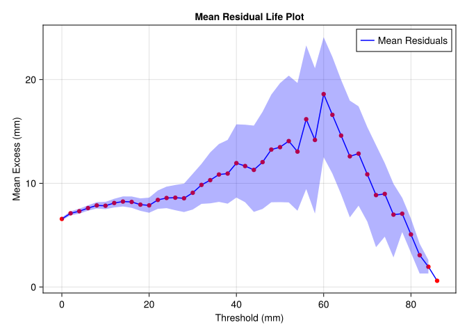
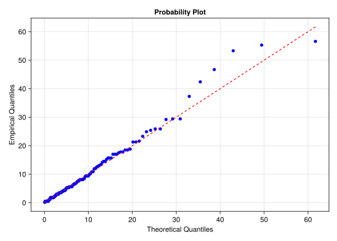
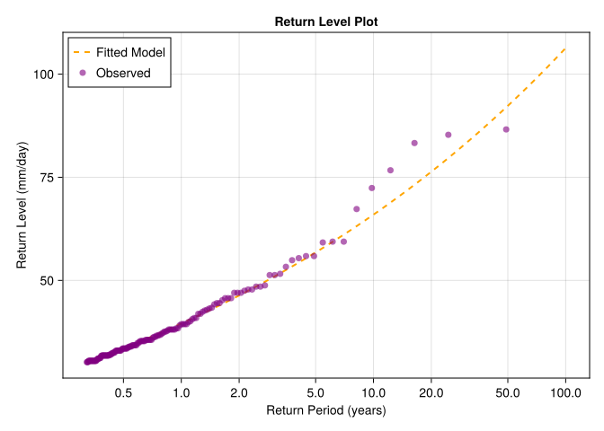

Block Maxima 📝
This tutorial walks through some basic choices for modeling block maxima using peak over threshold (POT) methods, using an example of extreme rainfall in England.
Credit
Load the dataset as demonstrated in the tutorial:
5×2 DataFrame
| Row | Date | Rainfall |
|---|---|---|
| Date | Float64 | |
| 1 | 1914-01-01 | 0.0 |
| 2 | 1914-01-02 | 2.3 |
| 3 | 1914-01-03 | 1.3 |
| 4 | 1914-01-04 | 6.9 |
| 5 | 1914-01-05 | 4.6 |
Replace the original plotting code with CairoMakie syntax. For example, to plot the daily rainfall data:
let
# Extracting data
dates = data.Date
rainfall = data.Rainfall
# Creating the plot
fig = Figure()
ax = Axis(
fig[1, 1]; title="Daily Rainfall in Southwest England", ylabel="Rainfall (mm)",
)
scatter!(ax, dates, rainfall; alpha=0.4)
fig
end┌ Warning: Found `resolution` in the theme when creating a `Scene`. The `resolution` keyword for `Scene`s and `Figure`s has been deprecated. Use `Figure(; size = ...` or `Scene(; size = ...)` instead, which better reflects that this is a unitless size and not a pixel resolution. The key could also come from `set_theme!` calls or related theming functions. └ @ Makie ~/.julia/packages/Makie/Q6F2P/src/scenes.jl:238

To create a Mean Residual Life (MRL) plot:
We can reproduce this using Makie
function mean_residual_life_plot(data, thresholds; n_bootstrap=1000, alpha=0.05)
# Compute mean residuals and confidence intervals
mean_residuals = [mean(data[data.>u] .- u) for u in thresholds]
# Bootstrapping for confidence intervals
ci_lower = Float64[]
ci_upper = Float64[]
for u in thresholds
excesses = data[data.>u] .- u
if length(excesses) < 2
push!(ci_lower, NaN)
push!(ci_upper, NaN)
continue
end
boot_means = [mean(rand(excesses, length(excesses))) for _ in 1:n_bootstrap]
push!(ci_lower, quantile(boot_means, alpha / 2))
push!(ci_upper, quantile(boot_means, 1 - alpha / 2))
end
# Create figure
fig = Figure()
ax = Axis(
fig[1, 1];
title="Mean Residual Life Plot",
xlabel="Threshold (mm)",
ylabel="Mean Excess (mm)",
)
# Plot mean residuals
lines!(ax, thresholds, mean_residuals; color=:blue, label="Mean Residuals")
scatter!(ax, thresholds, mean_residuals; color=:red)
# Plot confidence intervals as shaded region
band!(ax, thresholds, ci_lower, ci_upper; color=(:blue, 0.3))
axislegend(ax; position=:rt)
return fig, ax
end
fig, ax = let
thresholds = 0:2:100
mean_residual_life_plot(data.Rainfall, thresholds)
end
fig┌ Warning: Found `resolution` in the theme when creating a `Scene`. The `resolution` keyword for `Scene`s and `Figure`s has been deprecated. Use `Figure(; size = ...` or `Scene(; size = ...)` instead, which better reflects that this is a unitless size and not a pixel resolution. The key could also come from `set_theme!` calls or related theming functions. └ @ Makie ~/.julia/packages/Makie/Q6F2P/src/scenes.jl:238

As concluded by Coles (2001), chapter 4, a reasonable threshold is 30 mm.
We filter out exceedances
df = filter(row -> row.Rainfall > threshold, data)
df[!, :Rainfall] = df[!, :Rainfall] .- threshold
rename!(df, :Rainfall => :Exceedance)
first(df, 5)5×2 DataFrame
| Row | Date | Exceedance |
|---|---|---|
| Date | Float64 | |
| 1 | 1914-02-07 | 1.8 |
| 2 | 1914-03-08 | 2.5 |
| 3 | 1914-12-17 | 1.8 |
| 4 | 1914-12-30 | 14.5 |
| 5 | 1915-02-13 | 0.5 |
We fit the model
MaximumLikelihoodAbstractExtremeValueModel
model :
ThresholdExceedance
data : Vector{Float64}[152]
logscale : ϕ ~ 1
shape : ξ ~ 1
θ̂ : [2.006896498380506, 0.1844926991237574]Which gives us parameters
1-element Vector{Tuple{Float64, Float64, Float64}}:
(0.0, 7.440190834991565, 0.1844926991237574)and useful things like confidence intervals
2-element Vector{Vector{Float64}}:
[1.7543940197850576, 2.2593989769759544]
[-0.013857525987188785, 0.38284292423470356]Diagnostic plots
Probability plot
function probability_plot(fitted_model)
# Extract data and parameters
data = fitted_model.model.data.value
n = length(data)
sorted_data = sort(data)
empirical_probs = (1:n) ./ (n + 1)
# Theoretical quantiles
theoretical_quantiles = [
mean(Extremes.quantile(fitted_model, p)) for p in empirical_probs
]
# Create figure
fig = Figure()
ax = Axis(
fig[1, 1];
title="Probability Plot",
xlabel="Theoretical Quantiles",
ylabel="Empirical Quantiles",
)
# Plot empirical vs theoretical
scatter!(ax, theoretical_quantiles, sorted_data; color=:blue)
lines!(ax, theoretical_quantiles, theoretical_quantiles; color=:red, linestyle=:dash)
return fig, ax
end
let
fig, ax = probability_plot(fm)
fig
end┌ Warning: Found `resolution` in the theme when creating a `Scene`. The `resolution` keyword for `Scene`s and `Figure`s has been deprecated. Use `Figure(; size = ...` or `Scene(; size = ...)` instead, which better reflects that this is a unitless size and not a pixel resolution. The key could also come from `set_theme!` calls or related theming functions. └ @ Makie ~/.julia/packages/Makie/Q6F2P/src/scenes.jl:238

Return level plot
function return_level_plot(fitted_model, threshold, nobs, nobsperblock)
rt_plot = [0.5, 1, 2, 5, 10, 20, 50, 100] # Return periods in years
# Empirical return levels
exceedances = fitted_model.model.data.value # Extract exceedances
sorted_exceedances = sort(exceedances) # Sort exceedances for plotting
n = length(sorted_exceedances)
empirical_return_periods = [(nobs / nobsperblock + 1) / (n - i + 1) for i in 1:n]
empirical_return_levels = sorted_exceedances .+ threshold
# Fitted return levels
rt_calc =
exp.(
range(log(minimum(empirical_return_periods)), log(maximum(rt_plot)); length=100)
)
rl = [
mean(returnlevel(fitted_model, threshold, nobs, nobsperblock, rt).value) for
rt in rt_calc
] # Fitted return levels
fig = Figure()
ax = Axis(
fig[1, 1];
title="Return Level Plot",
xlabel="Return Period (years)",
ylabel="Return Level (mm/day)",
xscale=log10,
xticks=(rt_plot, string.(rt_plot)),
)
lines!(
ax, rt_calc, rl; color=:orange, linestyle=:dash, linewidth=2, label="Fitted Model",
)
scatter!(
ax,
empirical_return_periods,
empirical_return_levels;
markersize=10,
label="Observed",
alpha=0.6,
color=:purple,
)
axislegend(ax; position=:lt) # Adjusted legend position
return fig, ax
end
fig, ax = let
nobs = length(data.Rainfall)
nobsperblock = 365
return_level_plot(fm, threshold, nobs, nobsperblock)
end
fig┌ Warning: Found `resolution` in the theme when creating a `Scene`. The `resolution` keyword for `Scene`s and `Figure`s has been deprecated. Use `Figure(; size = ...` or `Scene(; size = ...)` instead, which better reflects that this is a unitless size and not a pixel resolution. The key could also come from `set_theme!` calls or related theming functions. └ @ Makie ~/.julia/packages/Makie/Q6F2P/src/scenes.jl:238
